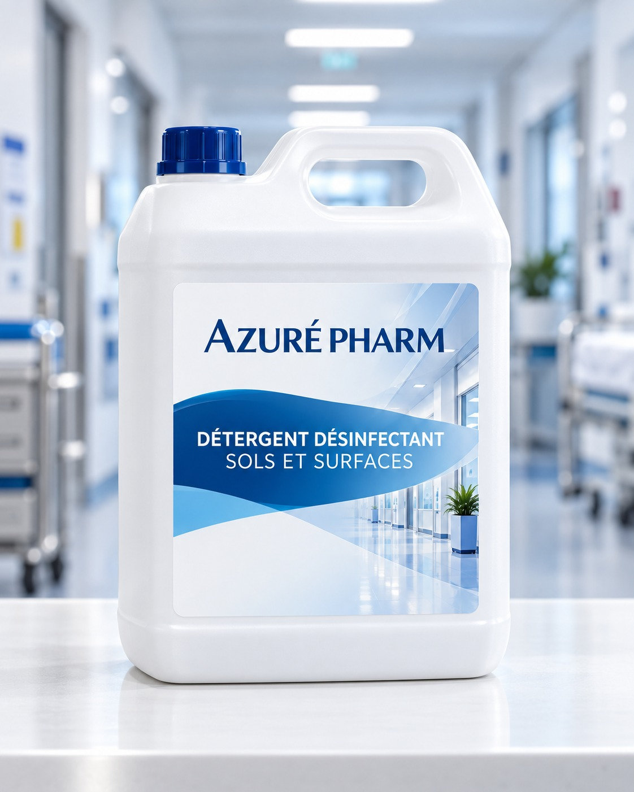

Détergent désinfectant sols et surfaces
Détergent désinfectant destiné au nettoyage et à la désinfection des sols, murs, matériels et dispositifs médicaux, selon la fiche technique transmise.
Demander des informations
Pour les sols, murs et surfaces.
La fiche mentionne le nettoyage et la désinfection des sols, des murs, du matériel et des dispositifs médicaux.
Caractéristiques
- Utilisable en eau froide ou chaude, jusqu’à +60 °C.
- Large compatibilité annoncée avec les matériaux et revêtements de surface.
- pH du produit pur : environ 12 ; pH à la dilution d’emploi : environ 8,5.
- Formule indiquée comme non corrosive en raison de l’absence d’oxydant.
Composition qualitative
N-(3-aminopropyl)-N-dodécylpropane-1,3-diamine (51 mg/g), chlorure de didécyldiméthylammonium (25 mg/g) et excipient, selon la fiche fournie.
La méthode indiquée dans la fiche.
Ces étapes reprennent le document transmis. Respectez toujours l’étiquette et les consignes en vigueur dans votre établissement.
- Préparer deux seaux
Remplir un seau de lavage et un seau de rinçage avec 8 litres d’eau chacun.
- Diluer à 0,25 %
Verser une dose de 20 ml de produit dans le seau de lavage.
- Nettoyer la zone
Après balayage humide, laver du fond de la pièce vers la sortie. La fiche précise de ne pas rincer les surfaces.
- Gérer la chiffonnette
Rincer et essorer la chiffonnette avant de la replonger dans le seau de lavage. La fiche recommande de placer le chariot dans le couloir.
Propriétés microbiologiques indiquées.
Les normes et temps de contact ci-dessous sont transcrits de la fiche transmise ; ils ne constituent pas une vérification indépendante.
| Spectre indiqué | Norme ou organisme mentionné | Temps de contact |
|---|---|---|
| Bactéries | EN 1040, EN 13727, EN 1276, T72-300 (BMR), EN 13697 | 5 min |
| Bactéries | NF T 72-170 / T 72-300 (L. pneumophila) | 15 min |
| Mycobactéries | Mycobacterium tuberculosis (B.K) | 15 min |
| Mycobactéries | EN 14348 (M. terrae) | 30 min |
| Levures / moisissures | EN 1275 (Candida albicans), T72-300 (A. niger, A. fumigatus) | 15 min |
| Levures / moisissures | EN 1650 (C. albicans) | 5 min |
| Virus | HIV-1, BVDV (virus modèle HCV) | 5 min |
| Virus | Influenza (H5N1) | 15 min |
| Virus | PRV (virus modèle HBV) | 30 min |
Formats mentionnés.
Carton de 12 flacons de 1 litre ou bidon de 5 litres.
Produit dangereux.
Respecter les précautions d’emploi indiquées sur l’étiquette. Stockage de +5 °C à +35 °C selon la fiche.
Données techniques communiquées pour cette référence Azuré Pharm. Consultez l’étiquette, la fiche technique et la fiche de sécurité à jour avant toute utilisation.